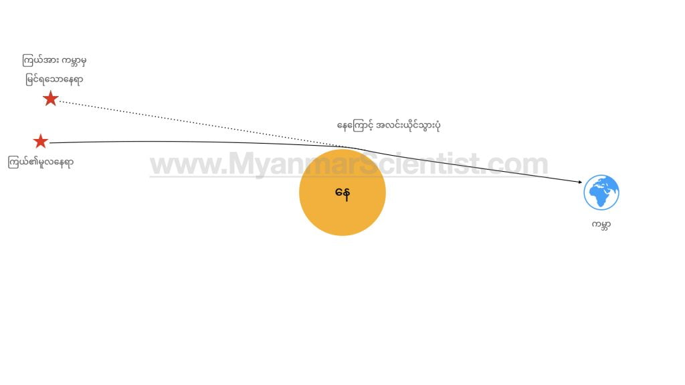
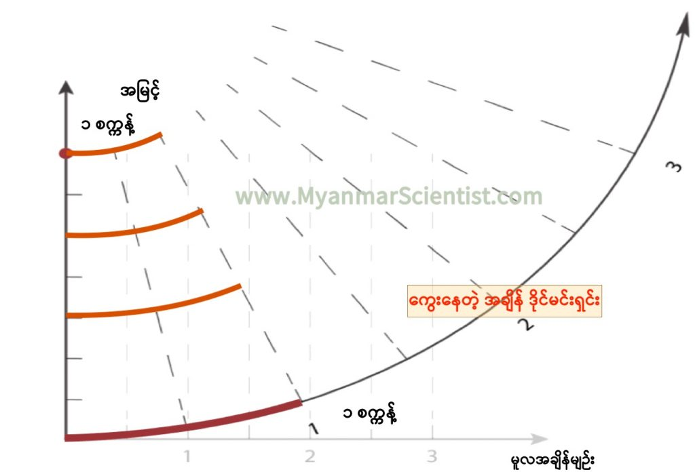

ဘာ့ကြောင့်ဖြစ်ရတာလဲ ဆိုရင် ထုံးစံအတိုင်း ဒီခေါင်းစားစရာ ပြဿနာ အားလုံးရဲ့ အရင်းအမြစ်ဖြစ်တဲ့ အိုင်းစတိုင်းနဲ့ သူ့ရဲ့ နှိုင်းယှဉ်ခြင်း နိယာမ (General Theory of Relativity) ဆီကိုပဲ ပြန်သွားရမှာ ဖြစ်ပါတယ်။ အိုင်းစတိုင်းရဲ့ ဒီသီအိုရီ အရ ဒြပ်ထုကြီးမားတဲ့ (ဥပမာ ကမ္ဘာလို၊ နေလို) အရာဝတ္ထုတွေဟာ သူတို့ရဲ့ ပတ်ဝန်းကျင်က အာကာသကိုရော အချိန်ကိုရော ကွေးပြီး ပုံပျက်သွားအောင် လုပ်နိုင်တဲ့ အစွမ်းရှိတယ်လို့ ပြောထားပါတယ်။ ဒီလို အချိန်က ကွေးသွား၊ ပုံပျက်သွားတဲ့ အတွက် ဒြပ်ထုကြီးတဲ့ (တနည်းအားဖြင့် ဆွဲငင်အား ကြီးမားတဲ့) အရာဝတ္ထုတွေနဲ့ နီးကပ်တဲ့ နေရာက အချိန်ဟာ ပိုပြီး လိမ်သွား ကွေးသွားတာကြောင့် ပိုနှေးသွားရတယ် လို့ နှိုင်းယှဉ်ခြင်း သီအိုရီက ဟောကိန်းထုတ်ထားပါတယ်။
ဒီလို ဆွဲငင်အားကြောင့် အချိန်ပိုကြာသွားတာ၊ အချိန်နှေးသွားတာကို “အချိန်ဖေါင်းပွခြင်း” လို့ အမည်ပေးထားပါတယ်။ ဘာလို့ ဒီလို အမည်ပေးတာလဲဆိုတော့ ဘေးကနေ ကြည့်နေတဲ့ သူတစ်ဦးအတွက် ဆွဲငင်အား ကြီးမားတဲ့ ရပ်ဝန်းမှာ အချိန်ဟာ တဖြည်းဖြည်း နှေးသွားပါတယ်။ ဒီလို နှေးသွားတာကလဲ အချိန်က ဆန့်ထွက်သွားလို့ပါ။ ဒါပေမယ့် အပြင်က ကြည့်နေတဲ့ သူရဲ့ အချိန်ကတော့ မူလအတိုင်း ပါပဲ။ အဝေးက သူအတွက် မြေဆွဲအား များတဲ့ နေရာက သူရဲ့ အချိန်က နှေးသွားတော့ အသက်ကြီးတာလဲ နှေးသွားပါတယ်။ တနည်းပြောရင် အပြင်က သူက မြန်မြန် အသက်ကြီးပြီး စောစောသေမှာပေါ့ဗျာ။ ဒီလို မြေဆွဲအားကြောင့် အချိန်တွေ ပွားလာ၊ ဆန့်ထွက်လာတာ (အသက်ပို ရှည်သလို ဖြစ်လာတာ) ကို “အချိန်ဖေါင်းပွခြင်း (Time Dilation)” လို့ ခေါ်တာပါ။ (ဒီဆောင်းပါးမှာတော့ နားလည်လွယ်အောင် Time Dilation ကို “အချိန်နှေးသွားခြင်း” လို့ပဲ ရေးပါမယ်။)
အက်ဒင်တန် သုတေသန
၁၉၁၉ ခုနှစ်မှာ ဖရင့် ဒိုင်ဆန် (Frank Dyson) နဲ့ အာသာ အက်ဒင်တန် (Arthur Eddington) တို့နှစ်ဦးဟာ နေကြပ်ခြင်းကို စောင့်ကြည့် လေ့လာခဲ့ကြပါတယ်။ သူတို့ဟာ နက္ခတ်ပညာရှင်တွေနဲ့ ရူပဗေဒ ပညာရှင်တွေ ပါဝင်တဲ့ အဖွဲ့နှစ်ဖွဲ့ကို ဖွဲ့စည်းပြီး အဲ့သည်နှစ် မေလမှာ ဖြစ်ပေါ်လာမယ့် နေကြတ်ခြင်းကို ကမ္ဘာ့နှစ်နေရာက ခွဲပြီး လေ့လာဖို့ စီစဉ်ခဲ့ကြတာပါ။ဒီအစီအစဉ်အရ အဖွဲ့တဖွဲ့က ဘရာဇီး နိုင်ငံကနေ နေကြပ်တာကို စောင့်ကြည့်မှာ ဖြစ်ပြီး နောက်တဖွဲ့ကတော့ အာဖရိက အနောက်ပိုင်း ကမ်းလွန်က ကျွန်းလေး တကျွန်းပေါ်ကနေ စောင့်ကြည်ကြဖို့ ဖြစ်ပါတယ်။
ဒီ လေ့လာမှုရဲ့ အဓိက ရည်ရွယ်ချက်ကတော့ အိုင်းစတိုင်းရဲ့ နှိုင်းယှဉ်ခြင်း နိယမ အရ ဟောကိန်းတွေ မှန်မမှန် သက်သေပြနိုင်ဖို့ပဲ ဖြစ်ပါတယ်။ ၁၉၁၅ ခုနှစ်က တင်ပြခဲ့တဲ့ အိုင်းစတိုင်းရဲ့ ဒီ နှိုင်းယှဉ်ခြင်း နိယာမဟာ အဲ့သည်အချိန်က ရူပဗေဒ လောကအတွင်းမှာ ပြင်းထန်စွာ ဂယက်ရိုက်ခတ်သွားပြီး အပြင်းအထန် ငြင်းခုန်နေကြတဲ့ အချိန်လဲ ဖြစ်ပါတယ်။
နှိုင်းယှဉ်ခြင်း နိယာမက ထုတ်ထားတဲ့ ဟောကိန်းတွေထဲက ဟောကိန်းတစ်ခုကတော့ ဒြပ်ထုကြီးမားတဲ့ နေလို အရာဝတ္ထုတွေနားက ဖြတ်သွားတဲ့ အလင်းရောင်ရဲ့ သွားလမ်းဟာ ကွေးသွားလိမ့်မယ်လို့ ဆိုထားပါတယ်။
အိုင်းစတိုင်းရဲ့ အဆိုအရ ဒြပ်ထုကြီးမားတဲ့ အရာဝတ္ထုတွေဟာ သူတို့ရဲ့ ကြီးမားတဲ့ ဒြပ်ထုကြောင့် သူတို့နားက အာကာသနဲ့ အချိန် (Space-time) ကို ကွေးသွားစေပါတယ်တဲ့။ ဒီလို ကွေးသွားတဲ့ အတွက် အလွန်လျှင်မြန်တဲ့ အမြန်နှုန်းနဲ့ သွားနေတဲ့ အလင်းလို အရာကိုတောင် ကွေးသွားစေမယ်လို့ ဆိုထားပါတယ်။
ဒီနေကြတ်မှုမှာ ကောင်းကင်က မှောင်သွားတဲ့အတွက် နေရောင်ကြောင့် မပေါ်တဲ့ ကြယ်တွေကို မြင်ကြရမှာ ဖြစ်ပါတယ်။ ဒီ နေကြတ်တဲ့ အချိန် နေအနားမှာ မြင်ရတဲ့ ကြယ်တွေကို ဓါတ်ပုံရိုက်ပြီး ပုံမှန် ညအချိန် မြင်ရတဲ့ ကြယ်တွေရဲ့ အနေအထားနဲ့ နှိုင်းယှဉ်ကြည့်ရင် ဒီကြယ်တွေရဲ့ အနေအထား ပြောင်းလဲမှု ရှိမရှိ တိုက်ဆိုင် စစ်ဆေးနိုင်မှာ ဖြစ်ပါတယ်။
အိုင်းစတိုင်းရဲ့ နှိုင်းယှဉ်ခြင်း နိယာမ အရဆို နေရဲ့ တဖက်မှာ ရှိနေတဲ့ ကြယ်တွေရဲ့ အလင်းရောင်ဟာ နေအနားကို ဖြတ်တဲ့ အချိန်မှာ နေရဲ့ ဒြပ်ထုကြောင့် ကွေးညွတ်သွားပါမယ်။ ဒီလို ကွေးညွတ် သွားတဲ့အတွက် ကောင်းကင်မှာ ရှိတဲ့ သူတို့ရဲ့ တည်နေရာကလဲ ပြောင်းသွားသလိုမျိုး မြင်ကြရမှာ ဖြစ်ပါတယ် (အောက်ပုံတွင် ကြည့်ရန်)။

ဒီစမ်းသပ်မှုဟာ အထူးပဲ အောင်မြင်ခဲ့ပါတယ်။ ဒီ နေကြတ်ချိန် ရိုက်ကူးထားတဲ့ ကြယ်တွေရဲ့ ဓါတ်ပုံနဲ့ ပုံမှန် ညအချိန် ရိုက်ထားတဲ့ ကောင်းကင်ဓါတ်ပုံ နှစ်ပုံကို ယှဉ်ကြည့်လိုက်တဲ့ အခါ နေဖြတ်သွားတဲ့ အနားက ကြယ်တွေရဲ့ အနေအထား ပြောင်းသွားတာကို ထင်ထင်ရှားရှား မြင်ကြရပါတယ်။ ဒီကြယ် တစ်လုံးခြင်းစီရဲ့ ပြောင်းသွားတဲ့ အနေအထားကို အသေးစိတ် တွက်ချက်ပြီး အဲ့သည်နှစ် နိုဝင်ဘာလမှာတော့ အိုင်းစတိုင်းရဲ့ သီအိုရီကို သက်သေပြတဲ့ ဒီစမ်းသပ်မှု ရလဒ်တွေကို တင်ပြနိုင်ခဲ့ပါတယ်။ ဒီမှာ ဝေဖန်နေခဲ့သူတွေ အသံတိတ်သွားခဲ့ပြီး အိုင်းစတိုင်းလဲ နာမည်ကျော်သွား ပါတော့တယ်။
နှိုင်းယှဉ်ခြင်း နိယာမ (General Relativity)
နှိုင်းယှဉ်ခြင်း နိယာမဟာ တကယ်တော့ မြောက်များလှစွာတော သိပ္ပံသဘောတရား (ရူပဗေဒ သဘောတရားတွေ) နဲ့ ဖွဲ့စည်းထားတဲ့ သီအိုရီကြီး တစ်ခုဖြစ်ပါတယ်။ အခု နှစ်ပေါင်း ၁၀၀ ကျော်လာသည့်တိုင်အောင် သိပ္ပံပညာရှင်တွေဟာ ဒီ နှိုင်းယှဉ်ခြင်း နိယာမရဲ့ သဘောတရားတွေကို စူးစမ်းလေ့လာနေကြဆဲ ဖြစ်ပါတယ်။ အလင်းက ဒြပ်ထုကြီးမားတဲ့ အရာဝတ္ထုတွေနားရောက်ရင် ကွေးသွားတာက နှိုင်းယှဉ်ခြင်းနိယာမရဲ့ ဟောကိန်းတွေထဲက တစ်ခုပဲ ရှိပါသေးတယ်။နှိုင်းယှဉ်ခြင်း နိယာမရဲ့ အယူအဆတွေက လူအများအတွက်တော့ နားလည်ဖို့ အတော်ကို ခက်တဲ့ အယူအဆတွေ ဖြစ်ပါတယ်။ ဒီနိယာမကို အလွယ်တကူ နားလည်နိုင်အောင် ရှင်းရမယ်ဆိုရင် အရာဝတ္ထုတစ်ခုရဲ့ ဒြပ်ထုဟာ သူ့ရဲ့ ဆွဲငင်အားနဲ့ အချိုးကျ နေတယ်ဆိုတာကနေ အရင်စ ပြောရမှာ ဖြစ်ပါတယ်။ အရာဝတ္ထု တစ်ခုရဲ့ ဒြပ်ထု ကြီးရင် ဆွဲအားများမယ်။ ဒြပ်ထု သေးရင် ဆွဲအား နည်းမယ်။ ဒြပ်ထု ကြီးလေလေ ဆွဲအား များလေလေပါပဲ။ ဒြပ်ထု ဆိုတာကို နားမလည်ရင် အလေးချိန် လို့ပဲ ခန မှတ်ထားလိုက်ပါခင်ဗျာ။
(တကယ်တော့ အလေးချိန်နဲ့ ဒြပ်ထုနဲ့ က ဆက်စပ်မှု ရှိပေမယ့် မတူပါဘူး။ ဒါပေမယ့် ရူပဗေဒ အခြေခံ မရှိတဲ့ သူတွေအတွက် ဒြပ်ထု (Mass) ဆိုတာကို နားလည်ဖို့ မလွယ်လို့ပါ။ ဒါ့ကြောင့် လေးတဲ့ ပစ္စည်းဆို ဆွဲအားများမယ်၊ ပေါ့တဲ့ ပစ္စည်းဆို ဆွဲအား နည်းမယ် လို့ပဲ ခန မှတ်ထားပေး ကြပါခင်ဗျာ။)
အဲ့တော့ အပေါ်က ပြောခဲ့တဲ့ ဒြပ်ထုကြီးရင် ဆွဲအားများမယ် ဆိုတာကို ပြန်ဆက်လိုက် ကြရအောင်ပါ။ ဒီလို ဆွဲအားများတော့ ဘာဖြစ်လဲ။ ဆွဲအားများတဲ့ အခါ ဒီအရာဝတ္ထုဟာ သူ့နားမှာ ရှိနေတဲ့ အာကာသကို ကွေးပြီး ပုံပျက်သွားစေပါတယ်။ ဒီလို အာကာသက ကွေးပြီး ပုံပျက်သွားတဲ့အတွက် အခြား အရာဝတ္ထုတွေဟာ ဒီအကွေးအတိုင်း လိုက်ပြီး ရွှေ့လျားကြတာပါ။ ဒါ့ကြောင့် ဂေါ်လီလုံး တစ်လုံးကို အမြင့်ကနေ ပစ်ချလိုက်လို့ ကျသွားတဲ့အခါ ပုံမှန်အတိုင်း ရှိနေတဲ့ အာကာသ (space) ထဲမှာ ကျသွားတာ မဟုတ်ပဲ ဒီအာကာသက ပုံပျက်ပြီး ကွေးနေလို့ ဒီအကွေးအတိုင်း လိုက်သွားတာ ဖြစ်တယ်ဆိုတာကို သဘောပေါက်ဖို့ လိုပါတယ်။

အိုင်းစတိုင်းကတော့ အာကာသမှာ အခုနက ပြောခဲ့တဲ့ ဒိုင်မင်းရှင်း ၃ ခုအပြင် အချိန်ဆိုတဲ့ ဒိုင်မင်းရှင်းပါ ထည့်ပေါင်းပြီး ဒိုင်မင်းရှင်း ၄ ခု ရှိတယ်လို့ ဆိုပါတယ်။ ဒီအယူအဆ အရဆိုရင် ကြယ်လိုမျိုး ကြီးမားတဲ့ဒြပ်ရှိတဲ့ အရာဝတ္ထုတွေ (မတရား လေးတဲ့ အရာတွေ) ဟာ အာကာသတင်မက အချိန်ကိုပါ ကွေးသွားစေတယ်လို့ ဆိုပါတယ်။
ဒီ အာကာသ (space) နဲ့ အချိန် (Time) နှစ်ခုဟာ နှိုင်းယှဉ်ခြင်း နိယာမအရ ခွဲလို့မရပါဘူး။ ဒါ့ကြောင့် ရူပဗေဒမှာ ဒီနှစ်ခုကို တွဲပြီး အာကာသနှင့်အချိန် (Space-Time) လို့ ခေါ်တာ ဖြစ်ပါတယ်။
ခုနက ပစ်ချလိုက်တဲ့ ဂေါ်လီလုံးကိစ္စ ပြန်ကောက်ကြရအောင်ပါ။ အကယ်လို့များ ဒီ ဂေါ်လီလုံးကို ကျွန်တော်တို့က အထပ်မြင့် တိုက်ပေါ်ကနေ ပစ်ချတာ မဟုတ်ပဲ ကမ္ဘာအပြင်ဖက် ပတ်လမ်းကနေ ပစ်ချလိုက်တယ် ဆိုပါစို့ဗျာ။ ပစ်ချလိုက်တဲ့ အခါ ခုနက အာကာသ (Space) က ကမ္ဘာ့ဆွဲအားကြောင့် ကွေးနေတာမို့ လွှတ်ချလိုက်တဲ့ ဂေါ်လီလုံးဟာ ဒီအကွေးအတိုင်း ကမ္ဘာမြေဆီကို ဆင်းသွားမှာ ဖြစ်ပါတယ်။ ဒါပေမယ့် ဒီနေရာမှာ စတုတ္ထ ဒိုင်မင်းရှင်း ဖြစ်တဲ့ အချိန်ကလဲ ဒီဂေါ်လီလုံး တည်ရှိနေတဲ့ ဒိုင်မင်းရှင်း တစ်ခု ဖြစ်နေပြန်ပါတယ်။ ဒီအချိန် ဒိုင်မင်းရှင်း ကလဲ ကွေးနေပြန်တာမို့ ဂေါ်လီလုံးက သူ့အကွေးလေးအတိုင်း လိုက်သွားပြီး အချိန် ဒိုင်မင်းရှင်းတလျှောက် အနာဂါတ်ဆီ ကို ရွှေ့လျားလို့ သွားတယ်လို့ အိုင်းစတိုင်းက ရှင်းပြပါတယ်။
ဒါကို အောက်က ပုံလေးမှာ ကြည့်လိုက်ရအောင်ပါ။ ဒီပုံမှာ ကြည့်ရင် အချိန်ရဲ့ ရွှေ့လျှားမှုကို အောက်မှာ ရေပြင်ညီ ဆွဲထားပြီး အမြင့်ကိုတော့ ဒေါင်လိုက် ဆွဲထားပါတယ်။ ဒီပုံမှာ အချိန်မျဉ်းက အများထင်သလို ဖြောင့်ဖြောင့်တန်းတန်း ရေပြင်ညီ ဖြစ်မနေပဲ ဆွဲငင်အားကြောင့် ကွေးနေတာ တွေ့ရမှာ ဖြစ်ပါတယ်။ ဒီလို ကွေးသွားတဲ့အတွက် အမြင့်မှာ ရှိတဲ့ တစ်စက္ကန့်က တိုနေပြီး အနိမ့်ပိုင်းက တစ်စက္ကန့်ကတော့ ရှည်နေတာ တွေ့ရမှာ ဖြစ်ပါတယ်။ တနည်းအားဖြင့် ဆွဲငင်အား များလေလေ အချိန်မျဉ်း ကွေးလေလေ। အချိန်ကလဲ ပိုရှည် ပိုကြာ ပိုနှေးလေလေ ဖြစ်လာပါမယ်။

ဒီလို ဒြပ်ထုကြီးမားတဲ့ အရာဝတ္ထုတွေနားမှာ ဆွဲငင်အားကြောင့် အချိန် “ဖေါင်းပွခြင်း” ဖြစ်စဉ်ကို မူလကတော့ သိပ္ပံပညာရှင်တွေဟာ အာကာသထဲက ဒြပ်ထုကြီးမားတဲ့ ကြယ်ကြီးတွေနဲ့ တွင်းနက် (Black Hole) တွေနားမှာ စတင်ပြီး တိုင်းထွာရရှိခဲ့ပါတယ်။ ဒါပေမယ့် ၂၀၁၀ ခုနှစ်မှာတော့ သိပ္ပံပညာရှင်တွေဟာ ကမ္ဘာပေါ်မှာတင် ဒီ အချိန်ဖေါင်းပွခြင်း ဖြစ်စဉ်ကို ပထမဆုံး တိုင်းထွာရရှိ ခဲ့ပါတယ်။
ဒီတိုင်းထွာမှုအတွက် သိပ္ပံပညာရှင်တွေဟာ အလွန် တိကျတဲ့ အဏုမြူနာရီ (Atomic clock) ကို အသုံးပြု တိုင်းထွာခဲ့ကြတာပါ။ ဒီ အဏုမြူ နာရီ ၂ လုံးကို တစ်ခုနဲ့ တစ်ခု ၃၃ စင်တီမီတာ အမြင့်ခွာပြီး ထားပြီး အချိန်ကို တိုင်းတာခဲ့ကြပါတယ်။ ဒီအခါမှာ ဒီလောက် (၃၃ စင်တီမီတာ ဆိုတာ ၁ ပေ ကျော်ကျော်လေးပါ) အမြင့်လေး ကွာသွားတာနဲ့ကို နာရီ ၂ လုံးရဲ့ အချိန်ဟာ ကွာသွားပါတော့တယ်။ ကမ္ဘာမြေနဲ့ နီးတဲ့ အနိမ့်က နာရီဟာ အမြင့်က နာရီထက် နှေးသွားတာကို တွေ့ကြရပါတယ်။ (သိပ်အများကြီး ကွာသွားတာတော့ မဟုတ်ပါဘူး။ 2.5 x 10^16 ပုံပုံမှ တစ်ပုံပဲ ကွာသွားတာပါ။ ဒါပေမယ့် ကွာတာကတော့ ကွာတာပါပဲ။)
ဒီကွာခြားချက်က သာမန်လူတွေ အတွက်တော့ အလွန်တရာမှ သေးငယ်ပြီး အရေးမပါတဲ့ ကွာခြားမှု လေးပါ။ ဒါပေမယ့် ရူပဗေဒ ပညာရှင်တွေ အတွက်ကတော့ အလွန်အရေးပါတဲ့ စမ်းသပ်တွေ့ရှိမှုပဲ ဖြစ်ပါတယ်။ ဒီ စမ်းသပ်မှုက ဘာကို သက်သေပြလိုက်လဲ ဆိုတော့ အိုင်းစတိုင်းရဲ့ သီအိုရီက နှစ်ပေါင်း ၁၀၀ ကျော်က ဟောကိန်းထုတ်ခဲ့သလိုပဲ “တည်မြဲတဲ့ အကျွင်းမဲ့ အချိန် (absolute time)” ဆိုတာ မရှိဘူး ဆိုတာကို သက်သေပြလိုက်တာပဲ ဖြစ်ပါတယ်။
ကမ္ဘာ့ပေါ်မှာ ရှိတဲ့ လူတိုင်းလူတိုင်း အတွက်ရော နာရီတိုင်း နာရီတိုင်း အတွက်ရော အချိန်ရဲ့ ရွေ့လျှားမှုနှုန်းက မတူပါဘူး။
လက်တွေ့အသုံချမှု
ဒီ အချိန်ကွာခြားမှု သဘာဝကို အသုံးချပြီး တောင်တွေရဲ့ အမြင့်ကို Atomic clock နဲ့ စမ်းသပ်တိုင်းထွာမှုတွေ စလုပ်နေပြီလို့ သိရပါတယ်။ လက်ရှိမှာတော့ ဒီ အက်တမ်နာရီရဲ့ အကြမ်းခံနိုင်စွမ်းအား နည်းတာမို့ လက်တွေ့အသုံးချနိုင်တဲ့ အဆင့်ထိတော့ မရောက်သေးပါဘူး။ သိပ်မကြာခင်မှာတော့ အမြင့်ပေ တိုင်းတာတာကို နှိုင်းယှဉ်ခြင်း သီအိုရီကို အသုံးပြုပြီး တိုင်းတာနိုင်ဖို့ သိပ်မဝေးတော့ဘူးလို့ မျှော်လင့်ရပါတယ်။ယခုလက်တွေ့မှာ ဒီ နှိုင်းယှဉ်ခြင်း သီအိုရီကို လက်တွေ့ အသုံးချ နေတာကတော့ GPS တည်နေရာ ရှာဖွေရေး စနစ်တွေပဲ ဖြစ်ပါတယ်။ GPS စနစ်ဟာ ကမ္ဘာပတ် လမ်းကြောင်းထဲ လှည့်ပတ်နေတဲ့ ဂြိုလ်တုတွေကို အသုံးချပြီး တည်နေရာ ရှာဖွေတာပဲ ဖြစ်ပါတယ်။ ဂြိုလ်တုကလာတဲ့ အချက်ပြ လှိုင်းတွေကို ဖမ်းယူပြီး တည်နေရာ ရှာဖွေတာပါ။
ဒီနေရာမှာ ပြဿနာ ရှိလာတာက ဒီဂြိုလ်တုတွေဟာ ကမ္ဘာ့အထက် မီတာ ၂၀,၀၀၀ လောက်အမြင့်ကနေ ပျံနေတာပဲ ဖြစ်ပါတယ်။ ပျံသန်းနေတဲ့ အရှိန်ကလဲ တစ်နာရီ ကီလိုမီတာ ၁၄,၀၀၀ တောင် ရှိပါတယ်။
ကီလိုမီတာ ၁၄,၀၀၀ အရှိန်နဲ့ ပျံနေတဲ့ ဂြိုလ်တုရဲ့ အချိန်ဟာ ကမ္ဘာမြေ မျက်နှာပြင်က နာရီတွေထက် တစ်ရက်ကို ၇ နာနိုစက္ကန့် (1 nanosecond = 1 စက္ကန့်၏ သန်း ၁၀၀၀ ပုံ တစ်ပုံ) ခန့် နောက်ကျနေပါတယ်။ ဒါပေမယ့် အမြင့် မီတာ ၂၀,၀၀၀ မှာ ရှိတာမို့ သူ့နာရီက မြေပြင်က နာရီထက် ၄၅ နာနိုစက္ကန့် မြန်နေပြန်ပါတယ်။ ဒီနှစ်ခု ပေါင်းလိုက်တော့ ဂြိုလ်တုပေါ်က နာရီဟာ မြေပြင်က နာရီထက် တစ်ရက်ကို ၃၈ နာနိုစက္ကန့် မြန်နေပါတယ်။
ဒီ အချိန်ကွာခြားချက်ကို ပြန်ပြီး မညှိနိုင်ဘူးဆိုရင် GPS နဲ့ တည်နေရာ ရှာဖွေရာမှာ အမှားတွေ၊ မတိကျမှုတွေ ကြုံလာမှာ ဖြစ်ပါတယ်။ ဒီအချိန်ကွာခြားမှုကို ပြန်မညှိနိုင်ရင် တည်နေရာ ရှာဖွေမှုဟာ တစ်ရက်ကို ၁၀ ကီလိုမီတာနှုန်းနဲ့ လွဲချော်သွားမယ်လို့ ဆိုပါတယ်။
ဒါ့ကြောင့် GPS ဂြိုလ်တုတွေပေါ်က နာရီတွေကို ကမ္ဘာပေါ်က နာရီတွေနဲ့ တူသွားအောင်ဆိုပြီး နဲနဲလေး နှေးအောင် တည်ဆောက်ထားပါတယ်။ ဒါ့အပြင် မြေပြင်က ဖမ်းစက်တွေမှာလဲ ဒီအချိန် သွားနှုန်းကွာခြားမှုကြောင့် ဖြစ်လာတဲ့ အမှားကို ပြန်လည်တွက်ချက်ပြီး အမှားပြင်ဆင်ချက် ပြုလုပ်နိုင်အောင် တည်ဆောက်ထားကြပါတယ်။
ယခုလက်ရှိမှာ နှိုင်းယှဉ်ခြင်း နိယာမက အချိန်နှေးခြင်းကို လက်တွေ့ အသုံးချမှု သိပ်မရှိသေးပါဘူး။ ဒါပေမယ့် သိပ်မကြာမီ ကာလမှာ လူသားတွေ အာကာသထဲ ခရီးဆန့်ကြတဲ့အခါ ဒီ နှိုင်းယှဉ်ခြင်း နိယာမရဲ့ အချိန်နဲ့ ပါတ်သက်တဲ့ လက်တွေ့အသုံးချမှုတွေက အရေးပါလာကြမယ်လို့ ယူဆရပါတယ်။
Reference:
Time Passes Faster on a Mountain Than at Sea Level | Interesting Engineering
‘Time is elastic’: Why time passes faster atop a mountain than at sea level | Big Think
Real-World Relativity: The GPS Navigation System | Ohio State University